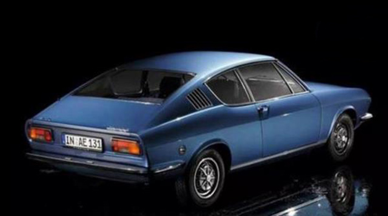

明日（5月29日），全新奥迪Q3 轿跑即将正式上市，新车关注度爆棚。而对于大多数的普通消费者来说，什么是Sportback？Sportback从何而来？加上Sportback的Q3有何非同反响之处？下面，选车网将为您逐一解答。
Sportback即溜背 却不只是运动
Sportback即奥迪溜背车设计，也可称之为“fastback”，又称快背车。最早可追溯至1930年代风行一时的水滴状流线车身，25年后才有明确的词汇，由著名的韦氏辞典在1954年命名，1970年正式收入该辞典里。
随着时代的发展，由于溜背车平顺直接的尾部线条明显区别于“大众设计”，Sportback设计又走上了汽车历史的舞台，并被赋予了全新的审美潮流。很多豪华品牌也纷纷推出属于自己的溜背车，用运动化的定位来区别家族中的普通车型。试图用独特的外观设计来争取更多的市场份额，毕竟这是个看颜值的时代。
值得一提的是，溜背设计也正如其英文名所表达的一样，平顺的尾部设计除了视觉效果外，确实还能带来一定的运动效果。
根据著名空气动力学康达效应的原理解释，流体（水流或气流）有偏离原本流动方向，改为随着凸出的物体表面流动的倾向。简单的说，当汽车高速行驶时，只要车尾部曲率不大，气流就会顺着该物体表面流动。而溜背设计可以完美的做到这点，整体流畅的造型不仅可以稳定汽车中后段的气流稳定，减小风阻系数，并结合尾翼设计能使气流在车辆尾端产生下压力，加强车辆高速行驶时的稳定。
当然，有得必有失，溜背车相比普通造型，平顺的尾部设计会稍微牺牲后排头部空间和一些行李空间，但是对于看重个性、时尚的年轻消费者来说，这不是问题，溜背在这个时代已经不仅仅是运动的代名词。
谁是奥迪Sportback的鼻祖
Sportback这个词，可以说是独立存在于溜背车市场，即奥迪为fastback专属设计的。是奥迪溜背设计理念的传承，并不算特别的新概念。其最大特点是集优雅、运动、实用于一身。近些年，奥迪A3、A1、A5和A7等车款都有推出过Sportback车型，不过追其源头，奥迪Sportback可以追溯到1968年。
早在1968年，奥迪在其当时的当家中级车奥迪100的基础上，推出的衍生车型奥迪100 Coupe车型，就带有如今我们看到的Sportback车型的影子，这款车也被公认为是奥迪Sportback车型的鼻祖。

奥迪100 Coupe的造型，用现在的眼光来看，似乎已经有些过时，但细品之下不难发现，如今的很多车型，依旧在使用着那个年代延续下来的造型语言，比如车尾的斜背时造型，仍然被新款的A5 Sportback及A7 Sportback延续。
此次推出的奥迪Q3轿跑，奥迪还实现了另一层含义上的打破老观念、自我突破。因为全新奥迪Q3 Sportback是奥迪第一款采用了Sportback理念的入门豪华紧凑型SUV。
与普通版Q3相比，变化集中在设计
说完奥迪Q3轿跑的前世渊源，让我们回到它与普通版Q3的区别。自奥迪Q3在去年换代之后，帅气阳刚的面庞就迎来了一片好评，一改此前略显柔美的风格。而此次Q3 Sportback 更是在车身设计方面彰显年轻与运动。
车身侧面采用了双腰线设计，微微隆起的刚硬线条让Q3充满力量，这种美好的视觉在全新奥迪Q3轿跑上再一次得到了升华。从B柱开始就向下倾斜的车顶弧线，一直延伸至尾灯上方，让原本就足够好看的Q3多了一股优雅的轿跑风，这也是奥迪Q3轿跑最大的魅力所在。
全新奥迪Q3轿跑的车尾细节设计，由于倾斜的D柱，所以全新奥迪Q3轿跑的车尾会比普通版车型看起来更具层次感。在同级车型还没有轿跑SUV的时候，这种视觉冲击无疑是巨大的。
来到内饰，奥迪没有趋同于竞品对于内饰的不“作为”，相比普通版采用了更讨喜的拼色内饰，来完善Sportback对于年轻的诠释。此外，全新奥迪Q3轿跑全系标配30色的环境氛围灯和发光门槛条，让年轻动感的气息无处不在。
值得一提的是，全新奥迪Q3轿跑在配置方面相比普通款也进行了一定升级。随着5G时代的到来，奥迪也做好了自动驾驶的一切准备，全新奥迪Q3轿跑先期配置的自动驾驶系统包括：侧向辅助系统、开门警示系统、奥迪整体式预安全系统前部版、主动车道保持、后方通行警示系统、带停走功能的自适应巡航控制系统。此外，全新奥迪Q3轿跑还提供陡坡缓降系统、智能泊车系统、360全景影像等驾驶辅助系统。
动力方面，全新奥迪Q3轿跑并没有因为Sport而提供相比普通款更运动更强劲的动力配置。依然是与普通款相同3种选择，其中35TFSI车型搭载EA211 1.4T涡轮增压发动机，最大功率110kW，最大扭矩250N·m。40TFSI和45TFSI发动机搭载的都是第三代EA888 2.0T涡轮增压发动机，最大功率分别是137kW和162kW，最大扭矩分别是320N·m和350N·m。三种动力总成均匹配7速湿式双离合变速箱，型号为DQ381。
写在最后：
在奥迪、宝马、奔驰的豪华产品线中，轿跑SUV通常都是出现在中型SUV或者中大型SUV上。在紧凑型SUV上布局轿跑SUV比较少见。此次，全新奥迪Q3轿跑的推出可以说打破了市场的规矩，将目标人群直指年轻消费者，一下降低了轿跑SUV的门槛，绝对能再次扩大Q3整体的受众群体。伴随着Sportback车型逐渐被消费者接受，它必将引领了新一轮汽车设计风潮。